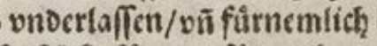
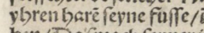

📢 Übersicht der Ground-Truth-Level
Die Erstellung von Ground-Truth (GT) beinhaltet mehrere Facetten. So ist der GT u. a. einem bestimmten Zweck oder Gebrauch unterworfen. Der Ursprung des Wortes Ground Truth ist das deutsche Wort Grundwahrheit. In diesem Sinn bedeutet das im Allgemeinen, dass alles auf der gedruckten Seite in gleicher Art und Weise wieder gegeben wird. Jedoch einzelne Elemente und Regionen können vereinfacht oder komplex und detailreich wiedergegeben werden. In welchem Umfang dies erfolgt, richtet sich u. a. nach dem Zweck, dem Gebrauch, dem Umfang, der Finanzierbarkeit, der technischen Verfügbarkeit Be- und Verarbeitungswerkzeugen. Das bedeutet, das in vielen Fällen eine Interpretation von einzelnen typographischen und graphematischen Phänomenen vorgenommen wird. Damit die getroffenen Interpretationen nachvollziehbar werden, kann der GT nach einem entsprechenden Level der Wiedergabe der Vorlage transkribiert werden oder bei vorhandenem GT eingeteilt oder evaluiert werden. Eine Beschreibung oder Erläuterung der Level finden sich in diesen Richtlinien an verschiedenen Stellen. Die folgende Übersicht listet diese Level-Beschreibungen auf.
Allgemeine Erklärung zu den Ground-Truth-Level
Transkription im jeweiligen Level?
Struktur-Ground-Truth im jeweiligen Level?
Erklärungen zu bestimmten Fällen wie Ligaturen, Satzzeichen, Unterschiede zwischen I/J…
Besonders ist dieser Teil der Dokumentation zu beachten:
Übersichten und Beispiele (betrifft die Transkription von Zeichen)
Level Empfehlung
- OCR-D empfiehlt für die Ground-Truth-Erstellung/Transkription Level 2.
Was sind die Level nicht?
- Die Einteilung der Level dient neben der Transkription auch der Einschätzung von Ground-Truth.
- Die Level sind kein Qualitätssiegel.
- Bei Nutzung von Level 2 und 3 ist eine textkritische automatische Erfassung/Transkription besser möglich. Voraussetzung das jeweilige Modell ist mit diesem Ground-Truth trainiert worden.
- Es gibt nur eine eingeschränkte Kompatibilität zwischen den Texten im Level 1, 2 und 3. In den meisten Fällen ist nur in absteigender Richtung (3->2->1) eine Kompatibilität gegeben.
- Die Level können nur eingeschränkt dazu genutzt werden, zwischen einzelnen Leveln automatisch zu konvertieren.
Problemfälle:
Im folgenden werden einige Problemfälle aufgelistet. Eine Vollständigkeit kann durch die Heterogenität der Phänomene nicht erreicht werden.
Problemfall langes S
siehe: https://de.wikipedia.org/wiki/Langes_s
Zitat aus Wikipedia:
- Wachſtube (Wach·stu·be [Zimmer eines Wachmanns]) und Wachstube (Wachs·tu·be [Tube (siehe https://www.dwds.de/wb/Tube#d-1-1) gefüllt mit Wachs])
- Kreiſchen (Krei·schen, für Schreien) und Kreischen (Kreis·chen, ein kleiner Kreis)
- Verſendung (Ver·sen·dung [etwas wird an einen anderen Ort gesendet] ) und Versendung (Vers·en·dung [das Ende eines Verses])
- Röschenhof (Rös·chen·hof, ein Hof mit kleinen Rosen) und Röſchenhof (Rö·schen·hof, vom Eigennamen Röschen)
- Lachſturm (Lach·sturm [heftiges Lachen]) und Lachsturm (Lachs·turm [ein Turm der aus dem Fisch Lachs besteht])
Problemfall Makron über dem Zeichen

Transkription:
vnderlaſſen/ vñ fuͤrnemlich = Level 2
allgemeine Regel: Level 3: ñ, Level 2 ñ, Level 1 nn (Beachten Sie immer den Kontext!!)
Der normalisierte Absatz lautet:
underlassen/ und fürnemlich = Level 1
unterlassen/ und vornemlich = mögliches Level 1 (Eine sehr starke
Normalisierung wurde vorgenommen.)
Problemfall Normalisierung von Transkriptionen/Text

ihren Haaren seine Füße,= mögliches Level 1yhren harẽ ſeyne fuſſe/= Level 2

doch soll der Vischer solch(es) Haar= mögliches Level 1doch soll der Vischer sollich haar= Level 1doch ſoll der Viſcher ſollich haar= Level 2
Quelle: [Württemberg, Fürstentum]: Des Fürstenthumbs Wirtemberg newe Landtsordnung/ gebessert vnd gemehret/ sampt darzu gedruckten der armen Casten/ auch Holtz vnnd Vorst ordnungen. [Tübingen], 1552. In: Deutsches Textarchiv https://www.deutschestextarchiv.de/wuerttemberg_landtsordnung_1552, abgerufen am 05.08.2021.
Zusatz:
Bei der Nutzung von Editionen ist ebenfalls die Normalisierung zu beachten. Dies zeigt dieses Beispiel deutlich.

Quelle: Sammlung der württembergischen Regierungs-Gesetze / 3: Enthaltend den dritten Theil der Samml. der Regierungs-Gesetze : … Regierungs-Gesetze vom Jahre 1727 bis zum Jahre 1805 ( Th. 1, 1489 - 1634, Band 12) [http://opacplus.bsb-muenchen.de/title/BV006590720/ft/bsb10552294?page=702] abgerufen am 05.08.2021.